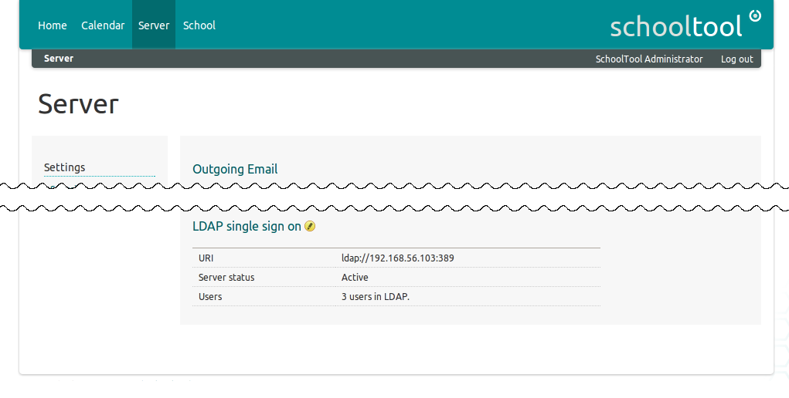
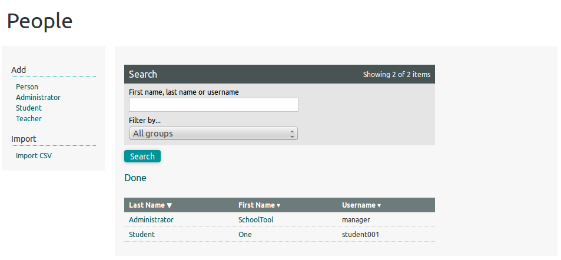
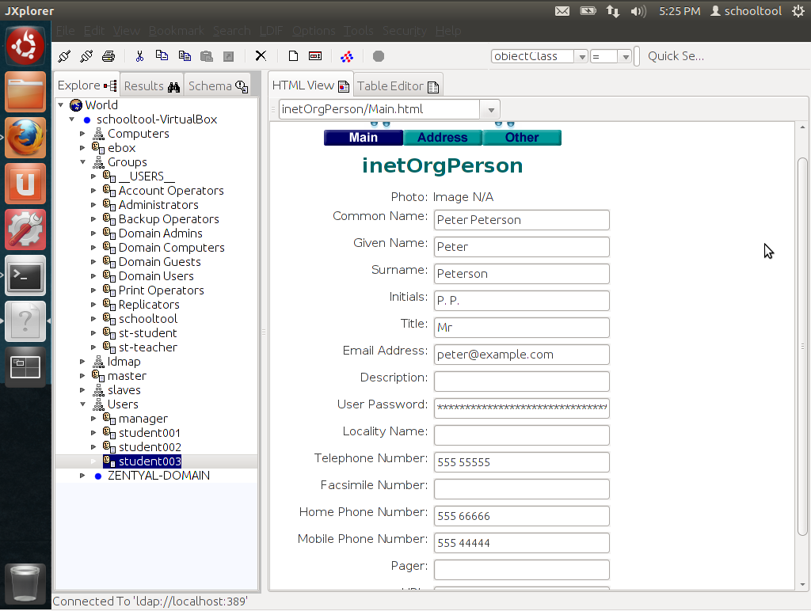
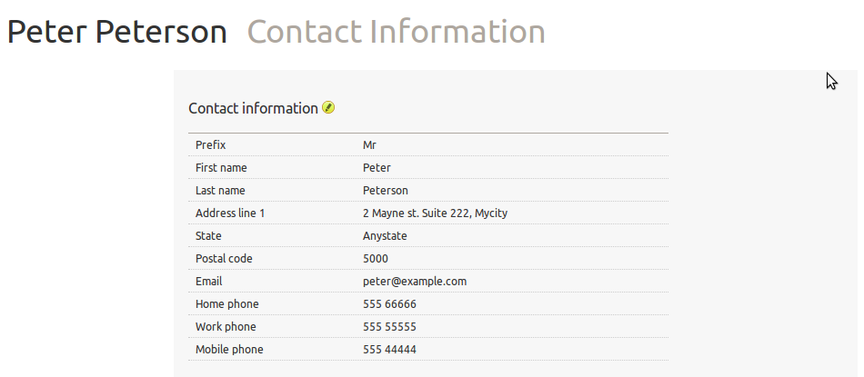
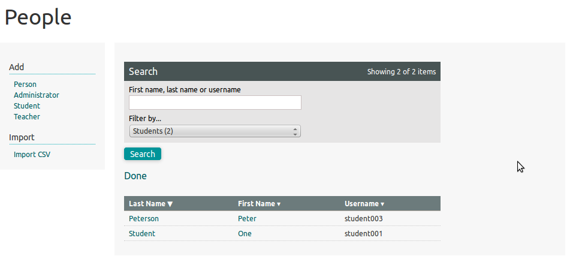
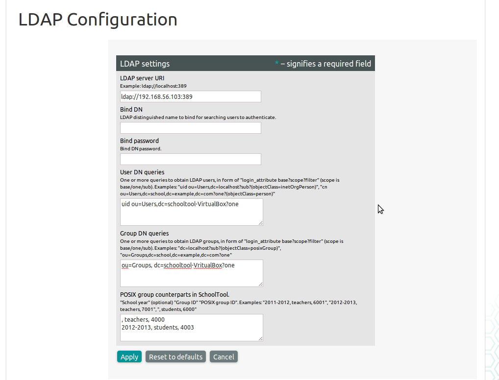
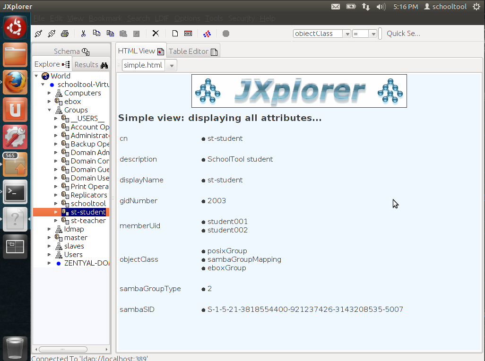

LDAP Single Sign-on¶
LDAP integration allows users to sign into SchoolTool with their existing LDAP accounts.
Warning
We cannot test our LDAP support against all the existing LDAP implementations and configurations, so we cannot guarantee it will “just work” for you.
Before you make any promises about SchoolTool working with your LDAP, test it against your LDAP server.
In particular, there seems to be a problem currently with LDAP servers trying to assign non-ASCII characters in usernames, which is not supported by Zope (and thus SchoolTool). We are looking into a fix for this issue.
To enable LDAP support, you will need to install the SchoolTool LDAP plugin from the Upgrading SchoolTool using Ubuntu Software Center, or the command line:
sudo apt-get install python-schooltool.ldap
Once you have installed the plugin, LDAP configuration will appear on the Server page.

Users will not be automatically “pulled” from the LDAP server. Instead, they will be created (if missing) when they log in for the first time. Here, student001 just logged in on a fresh SchoolTool installation with LDAP support:

SchoolTool will pull some of the user’s contact information and update it each time user logs in.
 
If configured, users can also be automatically assigned to desired SchoolTool groups. Here, two users have been assigned to “students”:

Configuring LDAP¶
By default, SchoolTool will look for /etc/ldap.conf and try to figure
out your current setup. If your server has that entry, there’s a good
chance that LDAP integration will work out-of-the-box.
If you have installed Zentyal (http://www.zentyal.com/) on the same server and configured Users / Groups modules, SchoolTool should be able to pick up LDAP settings automatically.
It’s important to note autodetection works on server start up, so SchoolTool needs to be restarted after the server’s LDAP config changes:
$ sudo service schooltool restart
SchoolTool’s LDAP settings can be edited with a web browser, unless this option is
explicitly disabled in schooltool.conf.

To enable LDAP integration you must specify LDAP server URI and at least one user DN query.
User DN queries are used to obtain the list of LDAP users. We also require to specify the “login attribute”, which in almost all cases is “uid” and should look like this:
uid ou=Users,dc=example,dc=com?one?(objectClass=inetOrgPerson)
If you need to fine-tune your queries it’s best to install an interactive LDAP browser (like http://jxplorer.org) and test what queries return proper lists of users.
Bind DN and Bind password are used when connecting to LDAP to retrieve the user list. Leave these fields empty if anonymous LDAP connections are allowed to query for users.
Group DN queries and POSIX group counterparts allow automatic adding of users to desired SchoolTool groups. To enable mapping, you will need to enter one or more queries that retreive the list of LDAP groups. You will also have to find out “gidNumber” of each LDAP group you want to map. Again, using tools like jXplorer helps a lot.

POSIX group counterparts allow you to bind groups to a specific school year or to the active one. Users will be assigned to their groups when they log into SchoolTool:
2012-2013, students, 2001
, teachers, 2003
Advanced configuration¶
You can configure LDAP by adding a section like this to schooltool.conf:
<ldap_authentication>
allow_web_config no
autodetect_from /etc/ldap.conf
uri ldap://127.0.0.1:389
default_login_attr uid
default_login_filter objectclass=inetOrgPerson
query_users uid dc=localhost?sub?(objectClass=inetOrgPerson)
query_groups dc=localhost?sub?(objectClass=posixGroup)
bind_group teachers 7001
bind_group 2011-2012 students 6024
bind_dn ldapmanager
bind_password thepassword
</ldap_authentication>
Important: through-the-web configuration takes precedence over
schooltool.conf, unless allow_web_config is set to no.
allow_web_config lets you disable through-the-web overriding of these settings.
autodetect_from should point to the ldap.conf file that SchoolTool
will use to infer its LDAP configuration.
It’s worth noting that query_users, query_groups and bind_group can have multiple entries.
default_login_attr and default_login_filter are rarely-used settings, useful primarily when you want to influence auto-detection of LDAP settings.